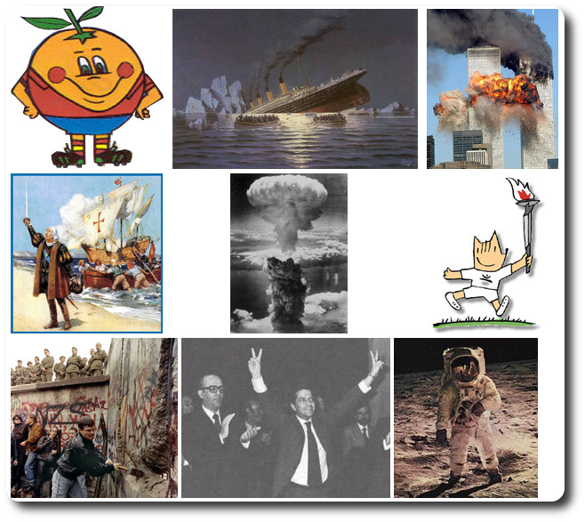

1. Introducción

En la sesión de hoy vamos a poner en práctica varios conceptos que venimos aprendiendo a lo largo del curso: manejo del correo electrónico, búsqueda de información, descarga de archivos en carpetas, y copiar y pegar información desde una aplicación a otra. Dedicaremos la clase a realizar la práctica con tranquilidad, entendiendo cada paso que realizamos, hasta que consigamos terminarla todo el mundo.
2. Buscar información
Os propongo un ejercicio de búsqueda de información. Empieza por una temática a tu elección de las que ves en la imagen, y localiza la siguiente información:
- Encuentra un artículo con información sobre el suceso histórico.
- Busca y descarga una imagen relacionada con el suceso.
- Os enviaré un correo solicitando la información que os pido. Responde a todos los destinatarios de ese correo (lo recibirá toda la gente de clase) incluyendo en el mensaje el título el nombre del suceso, el enlace al artículo con la información relacionada, y además como adjunto la imagen que has descargado.
Intenta enviarme el máximo número de mensajes y temáticas, pero sobre todo, vamos a intentar hacer todos los pasos correctamente.
3. Ejercicio Catedrales Góticas

- Busca información sobre las catedrales Góticas con Google y Wikipedia.
- Envíame por correo la descripción principal de lo que representa la arquitectura gótica (copiar y pegar del artículo de Wikipedia).
- Envíame en el mismo correo 2 fotos de las principales catedrales españolas de este estilo artístico.